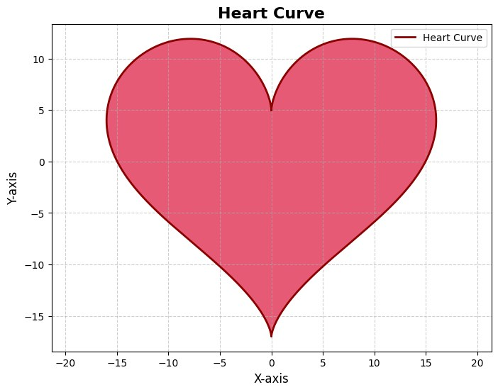

作業要做什麼
在 Google Colab 中，用 Python 畫出一個函數圖形。
我做了什麼
- 選擇畫心型參數方程式：x = 16 sin³(t)，y = 13 cos(t) − 5 cos(2t) − 2 cos(3t) − cos(4t)，t 從 0 到 2π。
- 用 numpy.linspace 在 0 到 2π 之間取 1000 個點，讓曲線夠平滑。
- 把 t 代入參數方程式，用陣列運算算出 x、y 座標。
- 用 plot 畫深紅色外框，再用 fill 填滿紅色。
- 加上 plt.axis('equal') 鎖定長寬比，並加上標題、座標軸名稱、格線與圖例。

結果與發現
- 成功畫出平滑、左右對稱的愛心。
- 比起只畫一條 y = f(x)，參數方程式可以用 t 同時控制 x 和 y，畫出 y = f(x) 畫不出來的封閉曲線。
- 沒有加 plt.axis('equal') 時，X、Y 軸比例不同，愛心會被拉扁；鎖定比例後形狀才正確。
心得
第一次在 Colab 畫圖，本來只想畫一個簡單的函數，後來覺得畫愛心比較有趣，就去找了心型的參數方程式。
最有感的是 plt.axis('equal') 這一行：沒加的時候愛心是扁的，加了才變成正常的形狀。原來同樣的資料，座標軸的比例設定不同，看起來就差很多。
AI 協助說明
作業本身是否使用 AI 協助：待作者補充。本頁的整理與心得初稿由 Claude 依我的作業內容協助撰寫，我確認後採用。